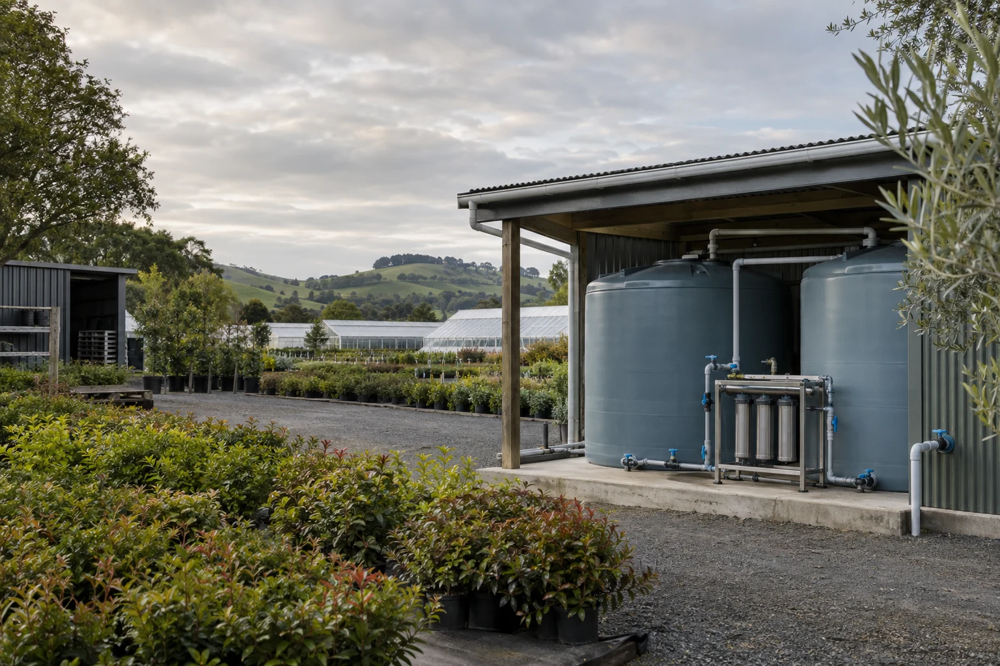

01 / GROWING
Ornamental nurseries
Captured or stored water for irrigation, with changing source conditions and a practical need for service access.
- Catchment and storage arrangement
- Irrigation pattern and seasonal demand
- Available source analysis
WHERE WE WORK
We work with ornamental nurseries and light industry. Three typical conversations show what to bring to the table — and what still needs to be established.
01 / GROWING
Captured or stored water for irrigation, with changing source conditions and a practical need for service access.
02 / MAKING
Non-potable process rinse, where the process owner needs to define what the water must do before a treatment stage is selected.
03 / RECONSIDERING
Investigating a return stream for a defined non-contact wash task, with a bounded pilot if the evidence is incomplete.

Hillbank Nursery, Cambridge / fictional project brief and generated concept image.
PROJECT BRIEF / 01
Start with the seasonal changes.
Keep the operator in the plan.
The nursery stores captured roof water beside its growing area. The manager has noticed seasonal changes in sediment and wants a filtration arrangement that a small on-site team can look after.
A catchment and storage sketch, available analysis, daily irrigation demand, peak-use periods and a record of source changes. The intended irrigation requirement must be agreed before equipment selection.
A covered plant area is available beside the tanks. The brief reserves access around the filter housings, visible isolation points and a place to record operator checks.
Consider a Sediment Rack only after reviewing source evidence and downstream requirements. If evidence is missing, agree the next investigation first; the photograph does not establish that this equipment is suitable.
Document the agreed duty, selected consumables, operator checks and service contact process. Record who will review a change in source conditions and how that affects continued operation.
Our stated market is non-potable water for nurseries and light industry. Municipal utilities, drinking-water approval and laboratory analysis are outside this company's scope. Food-contact or other uses outside the examples require a separate specialist discussion.
A GOOD PLACE TO START
Build a short preparation list for your source, site and intended use.
Prepare a source enquiry